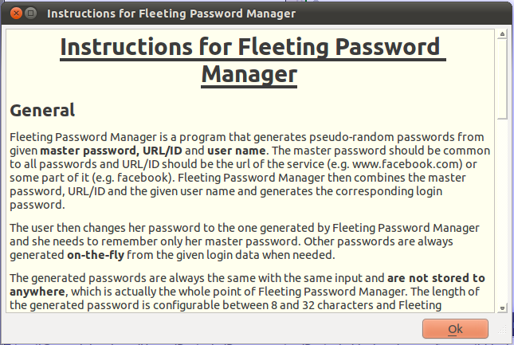
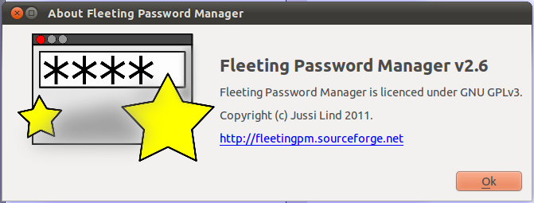

|
|
Fleeting Password Manager (fleetingpm)Jussi Lind <jussi.lind@iki.fi> The Fleeting Password Manager Project Page at |
|
|
|
Fleeting Password Manager (fleetingpm)Jussi Lind <jussi.lind@iki.fi> The Fleeting Password Manager Project Page at |
|
Fleeting Password Manager is a program that generates pseudo-random passwords from given master password, URL/ID and user name. The master password should be common to all passwords and URL/ID should be the url of the service (e.g. www.facebook.com) or some part of it (e.g. facebook). Fleeting Password Manager then combines the master password, URL/ID and the given user name and generates the corresponding login password.
The user then changes her password to the one generated by Fleeting Password Manager and she needs to remember only her master password. Other passwords are always generated on-the-fly from the given login data when needed.
The generated passwords are always the same with the same input and are not stored to anywhere, which is actually the whole point of Fleeting Password Manager. The length of the generated password is configurable between 8 and 32 characters and Fleeting Password Manager can remember wanted URL/User-pairs.
Fleeting Password Manager is currently being developed on Ubuntu Linux and is written in Qt. It runs on all major operating systems.
 |
 |
 |  |
(19-Sep-11): fleetingpm-2.6 released for Linux and MS Windows
(12-Sep-11): fleetingpm-2.5 released for Linux and MS Windows
(03-Aug-11): fleetingpm-2.4 released for Linux and MS Windows
(24-Jul-11): fleetingpm-2.3 released for MS Windows
(16-Jul-11): fleetingpm-2.2 released for Linux
(10-Jul-11): fleetingpm-2.1 released for Linux
Copyright (c) Jussi Lind 2011

Latest update on 19-Sep-2011
{kind=link}
{kind=link}